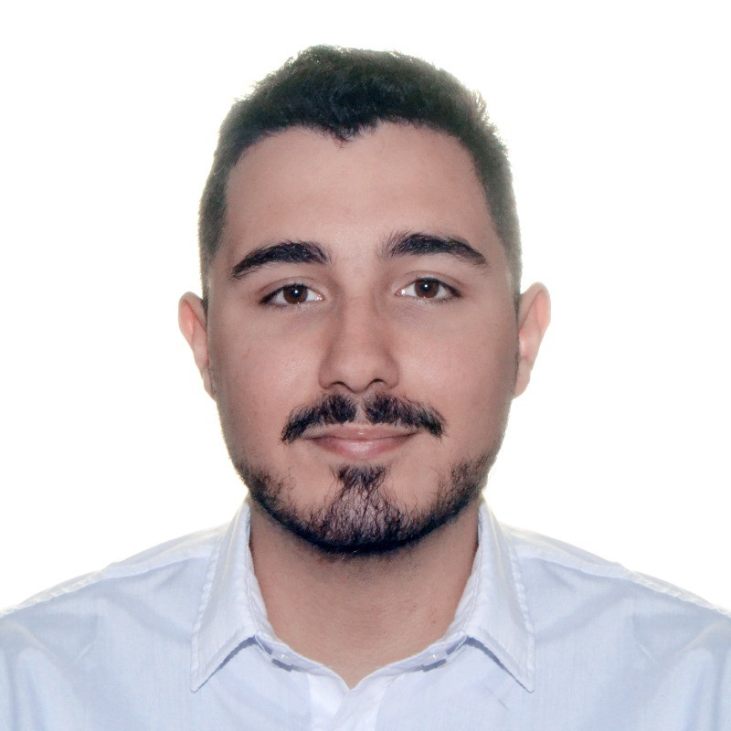

Hola! 👋, soy Matías, programador en formación, actualmente me encuentro trabajando en este sitio web!
Hoy en dia me encuentro trabajando bajo una importante empresa internacional de consultoria, bajo su equipo de tecnologia
Estoy estudiando en UADE la carrera de Tecnicatura Universitaria En Desarrollo de Software
Tengo ademas Certificacion en Desarrollo web de parte de CoderHouse y sobre tecnologia de IA por Kubicles.
Trabajando duro para sumar certificaciones de Red Hat 💪💪
Tengo experiencia trabajando sobre distintos sistemas y puedo adaptarme rapidamente
Aplico una mirada analitica hacia los problemas dejandome identificarlos y puedo abordar una estrategia para solucionarlos, siempre de forma proactiva

Tengo 22 años contando hasta Febrero 2024, me gustan los videojuegos, juegos de rol y leer, mi libro y saga de peliculas favoritas son "El Señor de los Anillos" de Tolkien 🧙
Graduado como Bachiller en Cs. Naturales en la E.E.S N°13 "Manuel Obarrio" el 2019
Con titulo de ingles C1 Advanced expedido por Cambridge University en 2021
Curse con Coderhouse recibiendo Certificacion de Desarrollo Web en 2022
Actualmente estudiando en UADE
Quiero seguir formandome en el oficio de IT, siguiendo más proyectos para poder desenvolverme cada vez más en este gran campo